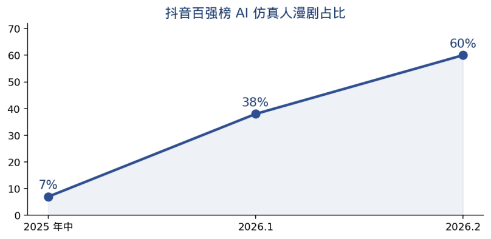
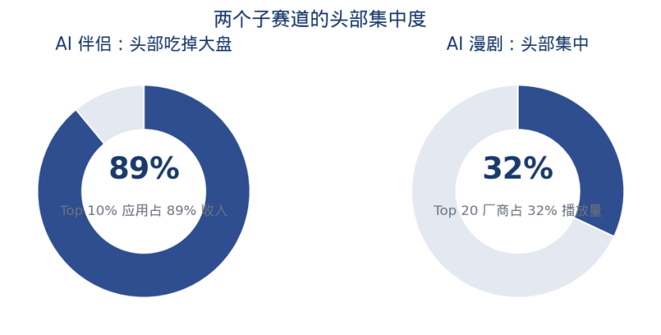

开篇:互动影游的 59 年,和 AI 带来的成本拐点
互动影游不是新概念。从上世纪 60 年代让观众投票改剧情的电影，到 Quantic Dream 的互动剧、Sam Barlow 的《Her Story》，再到近几年的《隐形守护者》《完蛋！我被美女包围了！》和 2025 年 12 天破百万套的《盛世天下》，影游一直有人做，也出过叫好又叫座的作品。
但这五十多年里，它一直是个小众品类，没能变成稳定的大生意。
2024 年 12 月 1 日,Netflix 下线大部分互动剧,24 部里下架了 20 部,理由是技术完成了它的使命。这基本是这一轮互动剧尝试的收尾。
2026 年这条赛道重新热起来，直接原因是 AI 改变了它的成本结构。
传统互动影游有个绕不开的问题:分支越多,真人拍摄成本越往上翻。《盛世天下》1200 分钟时长、上百条分支,光开发成本就是千万级。哪怕最精简的项目,也要 100-200 万启动、排 2-3 周、半年起周期。
AI 视频生成把单分钟成本从几万元降到 1000-2500 元,制作周期从半年压到 7-14 天。《气运三角洲》3 人团队 5 天做完,首播 29 小时 2 亿播放;《诡舍》从启动到上线两个半月。
但 AI 的影响不止降本。LLM 能实时扮演角色、视频模型能实时渲染画面、Agent 框架能让 NPC 带记忆之后,互动影游的边界也在变，今天看起来像互动剧的东西,几年后可能更接近一个可持续交互的虚拟世界。
AI 如何改变互动影游的经济模型
| 维度 | 传统真人 FMV | AI 漫剧 / 互动 |
|---|---|---|
| 单分钟成本 | 几千到几万元 | 1000-2500 元 |
| 制作周期 | 6-12 个月 | 7-14 天 |
| 团队规模 | 50-200 人(演员+摄制) | 3-30 人(提示词+审校) |
| 分支数上限 | 十几条(硬约束) | 数十到上百条 |
| 题材限制 | 真人演绎能力+场景成本 | 几乎无上限(玄幻/末日/异兽) |
| 多语言适配 | 重配音重译制 | AI 一键多语言,边际成本趋零 |
| 试错成本 | 全拍完才能测试 | 先出 10 集测水温,不行就停 |
AI 带来了生产方式的整体改变：
1. 题材限制放开
以前真人 FMV 只能做都市、古装、恐怖这几个能控制成本的题材。AI 之后,末世、修仙、封神、异兽、诡异、无限流这些以前”太贵拍不了”的题材全部涌入。
2026 年 2 月 DataEye 数据:AI 仿真人漫剧在抖音百强榜占比接近 60%。
2. 出海的边际成本大幅下降
同一套数字资产适配全球多语言,边际成本趋零。浙商证券 2026 年 2 月研报:2025 年海外短剧市场 40 亿美元(同比 +300%),下载量 18.55 亿次,其中国内出海短剧 14.93 亿次。2026 年预计 50 亿美元,AI 互动/漫剧出海市场从 2025 年 1 亿美元涨到 2026 年 6.5 亿美元。
国内企业出品的 AI 剧《After Divorce: My Five Brothers Paved My Way to the Billionaire Throne》和《The Billionaire’s Return》2025 年 11 月登顶海外短剧榜。
3. 试错成本下降,先上 10 集试水成为常见做法
酷看文化 CEO 李筝:”真人短剧需要全部拍完才能发行,AI 拟真人剧可以先生成 10 集上线测试,效果好再继续,大大节约试错成本。”
这 3 点加起来，互动影游开始从一次性的文化产品,向可批量复制的消费品靠拢。
背景:传统互动影游的老玩家还在场
在讲 AI 之前,先简单交代传统派。这些公司还在,目前仍是互动影游收入的主要来源,也是 AI 派要对标或替代的对象。
真人 FMV 派:精品化路线
这一派的核心特征是真人演员 + 预制视频 + 选择触发分支。代表作品和公司:
•Quantic Dream(法国,2022 年被网易收购)， David Cage,《Heavy Rain》《Detroit: Become Human》累计千万销量,代表”interactive drama”流派的工业化巅峰
•Sam Barlow / Half Mermaid(英国)， 《Her Story》《Telling Lies》《Immortality》三部曲,解构式 FMV 的艺术代表
•Supermassive Games(英国)， 《Until Dawn》《Dark Pictures》系列,剧集化恐怖互动剧工厂
•New One Studio(中国)， 《隐形守护者》140 万份、《盛世天下·媚娘篇》12 天 100 万套、2026 年 4 月 14 日开放《女帝篇》预约(1000 分钟 4K,腾讯代理移动端)
•INTINY(中国)， 《完蛋!我被美女包围了!》190 万份销售额 8000 万、《完蛋 2》2025 年 7 月上线
•欢瑞世纪、百纳千成、万维猫动画、优映文化(毛骗团队) ，影视公司试水互动影游,靠小成本高回报策略
真人 FMV 的天花板在于树状结构,成本随分支指数上升。往后他们大概率走精品化、3A 化,Quantic Dream 和 New One Studio 这类有机会留下来,一批模仿《完蛋》的中小工作室则会被 AI 漫剧挤掉。
视觉小说派:乙女游戏和北美互动小说
这一派的特征是立绘 + 文字 + 分支选择,用阅读和决策推进叙事。2024 年全球市场 15 亿美元,亚太占 45%。代表玩家:
•日本乙游:Idea Factory、Voltage(与梶裕贵合作 2026 新作)、CYBIRD(Ikemen 系列全球 3500 万用户)、Cheritz
•北美互动小说:Pocket Gems《Episode》(Tencent 9000 万美元战投,15 万故事,累计观看 30 亿)、Pixelberry《Choices》(累计收入 1.754 亿美元)
•国内四大国乙:叠纸、网易、米哈游、腾讯。叠纸《恋与深空》首月 6 亿、全球 5000 万玩家、2025 Gamescom 最佳手游
•Steam 独立神作:ZA/UM《Disco Elysium》、Spike Chunsoft《弹丸论破》、《Doki Doki Literature Club》
视觉小说是技术门槛较低的互动叙事产品,AI 成熟后,它和 AI 漫剧在加速融合。最典型的是火龙漫剧的火龙乙女宇宙,直接把乙游的人设体系搬到了 AI 漫剧上。
AI 互动影游全景:四个子赛道
| 子赛道 | 核心机制 | 代表玩家 | 底层技术 |
|---|---|---|---|
| AI 漫剧互动派 | AI 生成视频 + 分支机制 | 芒果、番茄、拼多多、腾讯、ReelShort、DramaBox、酱油、友和 | 视频生成模型 + 分镜工具链 |
| AI Native 游戏派 | LLM 实时对话 + 预生成视觉 | Anuttacon、Character.AI、Replika、Fable、Latitude | LLM + MetaHuman + Agent |
| AI NPC 引擎派 | 给传统游戏注入 AI 灵魂 | Inworld、Convai、Artificial Agency、NPCx、Hidden Door | Character Brain + Contextual Mesh |
| 世界模型终极派 | 实时视频生成 + 世界持久化 | Decart、Google Genie 3、混元 World、Cosmos、Runway、World Labs、AMI | Diffusion / Autoregressive 世界模型 |
这四条线是从内容层到基础设施层的分层:

图：AI 互动影游四个子赛道分层
第一赛道:AI 漫剧互动派(应用层)
这是目前规模最大、玩家最多、资金最集中的子赛道。核心是:AI 生成视频 + 分支机制 + 短剧逻辑。
为什么这是 AI 互动影游里最先起量的赛道? 一,短剧本身已经被验证是 23.8 亿美元(2025 海外)的大市场;二,互动机制可以无缝叠加到短剧现有付费模型上(按集解锁 → 按分支解锁);三,AI 降本
1.1 市场规模:从 168 亿到 240 亿,用户翻倍
DataEye 剧查查（林启文）的数据：
•2025 年中国 AI 漫剧市场规模 168 亿元
•**2026 年预计突破 240 亿元**
•艾媒咨询预测 2030 年达 500 亿+
•AI 漫剧用户规模 2025 年 1.2 亿 → 2026 年预计 2.8 亿(翻倍)
•2025 年仅抖音上线漫剧超 6 万部,整体播放量超 700 亿
•QuestMobile 数据:2025 年 12 月漫剧月活 845 万
•2026 年 1 月抖音百强榜 AI 拟真人短剧占比从 7% 激增至 38%
•**2026 年 2 月 AI 仿真人漫剧在百强榜占比接近 60%**

图：中国 AI 漫剧市场规模与用户规模（数据据 DataEye、艾媒）

图：抖音百强榜 AI 仿真人漫剧占比攀升
1.2 中国互动剧四大平台玩家
芒果 TV
芒果最早下场，但把互动剧当会员拉新工具用，不走长线 IP。2025 年底上线古风情感向的会员专属剧《公主请自重》；2026 年春节联合中南传媒出品《马上来财》，蹭迎财神做电子祈福，1 元解锁专属结局、图鉴和红包封面，初五单日独立访客峰值 33 万，几天播放破 1500 万。
番茄小说 + 字节系:最完整的生态闭环
2026 年 2 月，番茄与万年影业出品 AI 仿真人互动剧《诡舍》，无限流加规则怪谈、实时分支：答对解锁剧情，答错关键角色死亡、可回溯。怪谈刻意避开真人演员擅长的细腻情感戏，正好是 AI 仿真人的切入点。
字节的生态闭环覆盖了全链路,这是其他玩家短期难以对标的地方:
| 层级 | 资产 | 具体能力 |
|---|---|---|
| IP 供给 | 番茄小说 | 6 万部小说的版权库 |
| 制作工具 | 小云雀 AI / 即梦 | 提示词→ 分镜 → 视频一站式 |
| 视频生成 | Seedance 2.0 | 12 文件多模态输入,电影级镜头 |
| 分发渠道 | 抖音 / 红果 | 流量最大的短内容分发平台 |
| 激励政策 | 辰星计划 | 单部最高 500 万元保底 |
| 付费转化 | 抖音极速版 / 红果 | 短剧按集付费已跑通 |
拼多多:把互动剧当电商留存工具
2026 年 3 月，拼多多在多多果园上线首部 AI 互动剧《重生归来，我把后宫嫔妃踩脚下》，宫斗题材，关键节点暂停弹选项、选对赢果园道具。它的目的不在内容，在电商留存：用互动拉长停留时长、用奖励拉购物转化，不靠内容赚钱。
拼多多的目的不在内容,在电商留存:用互动内容拉长停留时长,再用游戏奖励强化购物转化。对电商平台来说这是合理选择，不指望靠内容赚钱,而是借它留住用户。
腾讯:入场偏晚,方向是做 UGC 平台
2026 年 4 月，腾讯被曝在做 AIGC 创作与展示平台探梦 DreamNow，支持互动影游的创作和展示、未来开放用户自创，样本作品《魏晋风骨》。
和前三家不同，腾讯要做的是人人可创作的互动影游 UGC 平台，对标抖音之于短视频，抢的是内容形态的入口。
1.3 B 站 + 爱奇艺:长视频平台的 AI 剧场打法
长视频平台这一轮比短视频平台动手慢,但目标更长线。
B 站
- 开设 AI 动画剧场 专属播出渠道
- AI 创作大赛 作为长期项目持续举办
- 自研 updream，面向专业创作者的 AI 视频创作产品，已开启内测
- 从奖金激励、IP 开放、栏目开通到工具上线，完整生态拼图
爱奇艺
- 上线首部作品 《天问》 的 AI 剧场
- 目标：打造一批 15 分钟以上的 AI 叙事影片（明显比漫剧做得更长）
- 入选团队能获得：投融资对接 + 15 部精选 IP 免费改编权 + 自研”纳逗 Pro”智能体平台
- 分成比例约 30%
1.4 制作方阵营:谁在真正生产 AI 漫剧
真正做 AI 漫剧生产的公司,绝大多数都是从传统短剧、漫画制作、网文改编转过来的。关键数据和玩家:
| 公司 | 核心数据 | 代表作品 |
|---|---|---|
| 酱油文化 | 国内规模最大 AI 漫剧公司。2026 年 80% 漫剧团队切换到 AI 拟真人。2025 年抖音累计播放第二 | 《洪荒:代管截教,忽悠出了一堆圣人》 |
| 友和文化 | 月收入 1000 万+。精品 AI 漫剧占 30-40%,沙雕漫 20%,AI 真人漫解 30%。全域投流 ROI 稳定在 1.1 左右 | 男频脑洞向 |
| 爱看互动 | 创始人孟祥云,快速扩张招人 | ， |
| 九州文化 | AI 技术为核心战略,自研 AI 创作工具,建 AI 创新基地。旗下 ShortMax 日本爆款 | ， |
| 麦芽传媒 | 密集招 AI 岗。旗下 NetShort 单月下载 2000 万+,环比 +170% | ， |
| 万年影业 | 和番茄合作《诡舍》 | 《诡舍》 |
| 阅文集团 | 投资酱油动漫,半年 AI 漫剧收入破亿,12 部作品播放量破亿 | 《魅魔叛主》 |
| 云梭映彩 | 创始人何元肖:”产业未来一定会向拟真人发展,因为市场更大” | ， |
| 酷看文化 | 从真人短剧转型,建立 30 人 AI 漫剧团队出海 | ， |
1.5 平台扶持:几百亿流量 + 几十亿现金砸下去
这是 2025 Q4 到 2026 Q1 整个赛道的资金体量:
| 平台 | 政策 | 金额/条件 |
|---|---|---|
| 抖音 / 字节 | 辰星计划(单部保底) | 最高 500 万元/部 |
| 抖音 / 字节 | AIGC 短剧联合招募计划(3/19) | 单部 200 万,重点 500 万 |
| 抖音集团 | 真人短剧扶持计划(2026/4/15 发布) | 5 亿元专项资金 |
| 快手 | 灵感·新纪元 AIGC 创投计划 2.0 | 50 万现金 + 1000 万灵感值 + 1 亿流量 |
| 腾讯视频 | 漫剧星河 | 番茄 6 万部 IP,免付费分成 90% |
| B 站 | 觉醒计划 + AI 动画剧场 + updream | 最高 80% 分成 + 千万级流量 |
| 百度 | AI 星河计划 | 3 倍分成 + 亿级流量池 |
| 爱奇艺 | AI 剧场 + 纳逗 Pro | 15 部 IP 免费改编 + 30% 分成 |
| 淘宝 | 短剧扶持计划 | 最高 50 万保底,书旗 2 万+ IP |
这些投入最终会转化成各家的 KPI 压力。2025 年全年漫剧播放量 643 亿次,Top20 厂商占 32%,头部集中度已经较高,没跟上平台扶持节奏的中小团队机会不多。
这里值得多问一句：平台为什么愿意砸几百亿，补贴一个 ROI 只有 1.1 倍的赛道？因为平台算的不是内容的账，是流量和留存的账。
•抢内容供给：新内容形态早期，谁补贴谁就有最多创作者和作品，先把供给侧飞轮转起来（字节、快手）。
•拉新与留存：互动剧是低成本的拉新和时长工具（芒果做会员拉新，拼多多做电商留存）。
•卡位基础设施：赌这个内容形态会变大，提前占住互动影游的抖音这个位置（腾讯做 UGC 平台）。
1.6 出海战场:美国 50%,东南亚 35%,日韩印度加速
海外 AI 漫剧/短剧市场的数字:
•2025 年海外短剧市场 40 亿美元(同比 +300%)
•2026 年机构预测 50–90 亿美元（点众陈瑞卿等口径，约 340–640 亿元人民币。2026.6 核实）
•2025 年海外短剧应用下载量 18.55 亿次,国内出海占 14.93 亿次
•**2025 年海外 AI 短剧/漫剧 1 亿美元,2026 年预计 6.5 亿美元**
•**Google 调查:超过 50% 海外用户愿意为 AI 短剧付费**
•北美贡献超60% 出海收入
•东南亚市场份额最高约35%,付费转化率持续提升
图：AI 短剧出海市场规模（2026E 含机构 60–90 亿区间）
出海短剧 Top 平台
| 平台 | 母公司 | 2025 H1 收入 | 核心市场 |
|---|---|---|---|
| ReelShort | 枫叶互动(中文在线) | 2.64 亿美元 | 美国、加拿大、澳大利亚、英国 |
| DramaBox | 点众科技 | 2.33 亿美元(2026/1 登顶) | 泰国、巴西、尼日利亚 |
| GoodShort | ， | 1.04 亿美元 | 多区域 |
| ShortMax | 九州文化 | 日本爆款 | 日本、东南亚 |
| NetShort | 麦芽 | 单月下载 2000 万+ | 全球,环比 +170% |
| PineDrama | 字节 | ， | 全球多区域 |
| PikoShow | 字节 | ， | 日本本土化 |
| FreeReels | 昆仑万维 | 下载榜多次登顶 | IAA 模式 |
TikTok 的 AI 短剧战场:aidramalabs 官方孵化
2025 年下半年,TikTok 开始在平台内涌现数十个 AI 短剧账号,上线 Series 专栏,稳定产出 AI 拟真人短剧与 AI 漫剧。
•多个账号粉丝破百万
•**用户名”aidramalabs”的十几个账号均来自同一团队，TikTok 内部孵化的官方账号**
•2025 年中就开始向外寻找优质团队承制
•单剧播放 6 亿,分账破百万
这是 ByteDance 在海外的另一条路，不只是做 PineDrama/PikoShow 这种独立 app,也在 TikTok 主平台内孵化原生账号生态。这个打法的好处是直接用 TikTok 的流量分发能力。
Disney 押注 DramaBox:传统内容巨头的选边站
Disney 跟 OpenAI Sora 的 10 亿美元合作 2026 年 3 月崩盘的同时,押注了 DramaBox，点众科技旗下出海短剧平台。
这个信号比较明确:Disney 认为用户付费的互动短剧比通用 AI 视频工具更快变现。传统 IP 巨头在 AI 视频上的态度,从合作 AI 平台转向押注中国 AI 短剧公司。
海外本土化平台也在崛起:乌克兰 My Drama、韩国 Vigloo(音频巨头背后)、印度 Kuku TV、日本 UniReel 都拿到了不错的下载份额。海外 AI 短剧从”中国出海”进入”本地化 + 中国出海双轨”阶段。
出海这门生意的经济学，关键在一句话：数字资产的边际成本趋零，但本地化不是零。同一套 AI 生成的剧，换语言只是重新配音和打字幕，边际成本几乎可以忽略，这是 AI 出海相对真人短剧最大的成本优势。但真正赚钱的本地化远不止翻译：
•题材本地化：北美吃霸总 / 狼人 / 复仇，东南亚吃家庭伦理，中东有宗教文化红线。题材选错，投流再多也转化不动。
•买量成本的区域剪刀差：北美 eCPM 和获客成本最贵，但 ARPU 也最高，所以贡献了超 60% 收入；东南亚获客便宜、付费率在涨，靠的是走量。这就是美国靠 ARPU、东南亚靠规模的底层账。
•结算与合规：各地支付渠道、分级审核、AI 标识要求各不相同，这部分是隐性成本，也是本土平台（My Drama、Vigloo、Kuku TV）的主场优势。
所以本地化 + 中国出海双轨不是偶然，中国玩家有供给和成本优势，本土玩家有文化和渠道优势。中期看，纯靠同一套剧换字幕的粗放出海会撞上本土化天花板，中国出海玩家的先发红利会随本地团队成熟而摊薄。
1.7 2026 年 4 月 1 日的监管大地震
2026 年 4 月 1 日,《网络微短剧分类分级管理规定》正式实施,这是近年中国对微短剧最严格的一次监管。
核心规定:
•三级分层审核:投资 ≥ 300 万或敏感题材 → 国家广电总局;100-300 万普通题材 → 省级广电;< 100 万 → 平台自审 + 省级备案
•AI 生成内容必须在片头或显著位置标注标识
•严禁低俗擦边、AI 魔改经典、未经授权使用真人肖像
•4 月 1 日前未备案存量作品全网强制下线
现实冲击:
•约 4 万部未备案 AI 短剧下架
•3 月 31 日深夜”全行业熬夜补备案”,有人果断下架,有人宣布退圈
•红果短剧核查 1.5 万部,处置违规作品 670 部
•广电总局”AI 魔改”专项治理清理违规视频 5.2 万+ 条,处置违规账号 140 余个
•易烊千玺工作室 4 月 5 日发声明,指出 AI 剧集盗用其肖像和声音构成侵权;红果 4 月 6 日宣布下架
•抖音 4 月 7 日起大幅提升漫剧审核标准,”盗脸”、”性转”、”魔改”几乎全军覆没
•快手 4 月 15 日发布违规治理公告,累计前置拦截、整改、下架百余部
从业者视角:”以前一个 3 人团队 5 天就能做出一部 75 集的 AI 漫剧,现在必须先等备案通过才能上线。’蹭热点’的玩法基本失效。”
这波监管洗掉了 AI 漫剧的第一波套利玩家,但中长期利好精品化厂商。**数量不再是壁垒,内容打磨才是护城河**。
目前播放量超过 1 亿的漫剧不超过 150 部,占全部漫剧比例仅 0.117%。
某短剧平台运营负责人透露”2026 年 70% 流量资源倾斜给头部优质内容,剩下 30% 给中腰部,那些质量差、套路化的,基本没有曝光机会”。
AI 漫剧的竞争力是”快”和”便宜”,逐渐变成了”质”和”稳”，这也是成熟化的标识。
第二赛道:AI Native 游戏派(LLM 实时驱动)
这个子赛道的核心是:LLM 实时生成对话和剧情,不再是预设分支树。它在技术上最接近实时叙事,在商业化上也是消费级里相对成熟的形态。
这一派又可以分成三个子方向:LLM 剧情陪伴、LLM + 游戏化、LLM + 生成式 TV。
2.1 LLM 剧情陪伴:Character.AI / Replika 的亿美元市场
这是 AI Native 派里商业化最成熟的子方向,因为太“原始”了，不打算展开。
2.2 LLM + 游戏化:《星之低语》的极致实验
这个子方向今天只有一家公司做到了真正的商业化产品，Anuttacon。
2025 年,米哈游联合创始人蔡浩宇在新加坡成立 Anuttacon:
•注册地新加坡 6 Raffles Quay #14-02
•总部加利福尼亚州圣克拉拉,办公室覆盖旧金山湾区
•团队集结微软、Meta、DeepMind 顶尖 AI 人才,半数来自米哈游 AI 部门
•“我们要做 AGI 时代的迪士尼“
《Whispers from the Star》(星之低语):2025 年最受瞩目的 AI 游戏
时间线:
•2025 年 3 月 15 日首曝 PV
•7 月 10 日 Demo 登陆 Steam 美区免费榜
•8 月 15 日正式上线 Steam,售价 9.99 美元
玩法:你是宇航员 Stella 唯一能联系到的人。她飞船事故搁浅在外星球”盖亚”,你通过文字、语音、视频通话跟她实时对话,指导她求生。
技术架构(对理解 AI Native 产品非常关键):
•对话树包含 2000+ 分支节点,每次体验不同
•基于 LLM 实时对话,不是预设对话树
•Stella 的心率、情绪、生存决策实时响应玩家互动
•可以问非预设问题(她的身份、逃生策略)
•声纹识别记住用户身份和历史交流
•语气影响情绪:焦虑时她抱膝蜷缩,开心时瞳孔发光
•表情、动作、对话内容同步 AI 生成
•你的建议会导致她死亡，”实时互动 + 非线性叙事 + 决策可致死”
•记忆和性格会随互动变化
•底层基于UE + MetaHuman 生态
《星之低语》的价值在于:它证明 LLM 驱动的虚拟角色今天已经能支撑一个商业化产品。
2.3 LLM + 生成式 TV:Fable Studio 的 Showrunner 模式
Fable Studio 2018 年成立,VR 出身,首作《Wolves in the Walls》拿过艾美奖。
路径:
•2023 年 7 月发表 SHOW-1 论文,用 AI Agent 网络生成完整动画剧集
•做了几集未授权的《南方公园》AI 生成集,被编剧工会骂翻
•2024 年 6 月推出 Showrunner 流媒体平台，用户文字提示生成自己的动画剧集
•Amazon 投资
•原创剧《Exit Valley》作为 Sim Francisco 模拟世界的展示
Fable 的野心是 “generative TV + playable entertainment”，让观众不只是看,而是参与塑造叙事,甚至把自己和朋友上传到 Sim Francisco 里面。
Fable CEO Edward Saatchi 是 Oculus Story Studio 创始成员,长期致力于把 VR、AI、叙事结合起来。
Fable vs《星之低语》对比:
•Fable 做”内容工业化”:批量生成,目标是 TV 平台
•《星之低语》做”单品极致化”:单个角色的生命感
•两条路都没完全跑通，Fable 被骂 “soulless and unfunny”,《星之低语》体量太小
第三赛道:AI NPC 引擎派(给游戏做 AI NPC 中间件)
这个子赛道不做终端产品,只做中间件。给 AAA 游戏、独立游戏、VR 应用做 AI NPC 引擎。它是 AI 互动影游里最 B2B 的一块,也是融资最集中的一块。
2026 年 NPC AI 市场研究(Research & Markets)数据:2029 年 55.1 亿美元市场规模。
3.1 Inworld AI:这一派的绝对头部
- 美国 Mountain View 总部
- 累计融资 1.257 亿美元（AI 游戏赛道融资最多的创业公司）
- 2023 年 8 月 Series A 5600 万美元，估值 5 亿美元
- 创始人 Kylan Gibbs 原 Google DeepMind PM
- 投资方：Sequoia、Lightspeed、Microsoft M12、Samsung NEXT、Stanford、Section 32、NTT DOCOMO、Meta、Nate Mitchell
Inworld 的样例《Origins》是个 AI 驱动的侦探游戏,玩家用麦克风审问 NPC 证人破案,算是把 AI NPC 当成核心机制的一次完整演示。
3.2 其他 AI NPC 引擎玩家
| 公司 | 总部 | 融资 | 定位 |
|---|---|---|---|
| Convai | 美国 San Jose | 475 万美元 | NPC AI Engine。Unity 商店装机 27 万+,CES 2024 Nvidia 发布会亮相。支持对话、动作、语音、口型同步 |
| Artificial Agency | 加拿大 | 1600 万美元 | 前 Google DeepMind 研究员创立,behavior engine 而非 chatbot。强调运行时决策引擎 |
| NPCx | 美国 Florida | 363 万美元 | NPC AI + 动作捕捉,游戏/AR/VR |
| Hidden Door | 美国 NY | 900 万美元 | narrative multiverse,小说 IP 变协作 RPG |
| Charisma.ai | 英国 | ， | 对话式 AI,Stanford 创业加速器孵化 |
NPC AI 引擎派的核心挑战
B2B 的模式注定了这一派的增长跟”大客户采购 AI NPC”节奏挂钩。目前的现实是:
•3A 级游戏工作室对 AI NPC 的采购还非常谨慎,主要原因是版权、工会、玩家体验稳定性三重顾虑
•Microsoft Xbox 跟 Inworld 合作是一个”开发工具”级别的项目,不是游戏机制级别
•网易《Cygnus Enterprises》用 Inworld 是一个小范围实验
AI NPC 引擎派 2026-2027 年的突破口不在 3A,**在独立游戏和 VR**。独立游戏对创新容忍度高,VR 对”NPC 生命感”的需求最迫切(没有 AI NPC 的 VR 就是空壳子)。这两个细分场景,才是 Inworld 们的主战场。
第四赛道:世界模型派(底层基础设施)
这是目前投入最大、技术最难的子赛道。核心是:实时视频生成 + 世界持久化 + 物理一致性。
世界模型这个词在 AI 圈出现很久,但跟互动影游真正打通是 2025 年下半年之后的事。2026 年可能是世界模型从研究概念走向可用产品的一年。
详细可见之前分析的文章：
深度分析：世界模型全景地图—从 30 秒手搓小游戏到 10 亿种子轮
四条算法策略:AI 互动影游的技术拆解
把上面这些玩家的技术栈抽出来看,AI 互动影游大致就四套核心算法策略。看清这四条路线各自的能力边界,比记住具体玩家更有用。
策略一:AI 生成视频 + 预制分支(漫剧互动标准路线)
代表:《诡舍》《公主请自重》《魏晋风骨》《马上来财》
完整工作流:
•剧本层:GPT-5 / Claude / DeepSeek 生成主线 + 分支剧本
•角色一致性层:SD + LoRA / IP-Adapter FaceID 锁定角色
•分镜层:Drawstory、StoryboardHero 自动拆分镜头
•视频生成层:Seedance 2.0 / 可灵 3.0 / Sora 2 / Veo 3.1 / 海螺 / Vidu
•配音层:CosyVoice、ElevenLabs、Suno v4
•剪辑层:即梦、剪映
技术瓶颈:三个核心挑战，角色一致性(换场景不变脸)、分镜连贯性(前后镜头光线/构图/运镜逻辑)、互动节点生成(玩家选择后的分支剧情如何快速生成)。
单分钟成本:1000-2500 元(比传统动画便宜 1/5 到 1/10)
图：每分钟内容成本数量级对比（对数轴）
现实问题:AI 生成视频的”漂移感”和”不稳定性”,让互动节点设计难度远高于真人 FMV。真人拍的分支只要演员场景对得上就行,AI 每次重新生成都可能变样。
先说角色一致性，换个场景脸就崩，是 AI 漫剧最致命的穿帮。它的解法这两年走过明显的三代：
•第一代· 微调锁定：DreamBooth / LoRA 把角色的脸和服装训进一个小模型，几十张图训十几分钟。问题是一个角色一个 LoRA，多角色同框会互相污染，换画风还得重训。
•第二代· 参考注入：IP-Adapter、InstantID、PuLID、FaceID 这类方法不再训练，直接把一张参考图编码成条件喂进生成，即插即用。代价是身份保真和表情自由互相拉扯，锁脸越死，演技越僵。
•第三代· 原生一致性：Seedance 2.0、可灵 3.0 这代视频模型把角色 token 做进了模型本身，多图参考 + 跨镜头身份绑定成了原生能力，不再靠外挂。这才是 2026 年 2 月后 AI 仿真人漫剧占比能从 38% 冲到 60% 的底层原因，一致性这道坎被模型层解决了一大半。
第二道坎是分镜连贯性。真人拍摄天然连贯，AI 每个镜头独立生成，光线、构图、运镜很容易跳。工程上的标准解法是锚点链：用上一镜头的尾帧作为下一镜头的首帧条件（首尾帧绑定），再用统一的运镜模板和固定光照描述词把整条序列串起来，最后叠一层人工分镜审校，把跳变镜头打回重生成。
第三道坎才是互动影游独有的，互动节点生成。这里有个根本的工程权衡：预生成还是实时生成。
•预生成全分支树：开播前把所有分支都渲染好，用户选择只是切片播放。优点是零延迟、质量可控；缺点是分支数指数膨胀，一部五选三层的剧就是上百条视频，存储和生成成本陡增。这是今天《诡舍》《马上来财》的主流做法。
•实时生成分支：用户选了再生成。优点是分支无上限；缺点是要等十几秒到几分钟，体验断裂，且每次生成都可能跟前文对不上。今天没人敢在 C 端主线上用。
所以现阶段所有跑通的 AI 漫剧，本质都是预生成 + 有限分支，互动是预制的，不是实时的。这也解释了策略一为什么离活的互动剧还很远：它只是把树状结构的拍摄成本打下来了，树状结构本身没变。
策略二:LLM 实时对话 + 预生成视觉(游戏化路线)
代表:《星之低语》、Character.AI、Inworld 驱动的游戏
技术栈:
•LLM 层:GPT / Claude / 自研,负责对话和剧情推理
•角色层:预训练的 personality / memory / goals 系统
•视觉层:预制动作库 + 实时情绪驱动(如 Unreal MetaHuman)
•Agent 框架:Inworld Character Brain / Convai Contextual Mesh
•记忆层:情景记忆(events)+ 语义记忆(facts)+ 程序记忆(patterns)三层架构
•语音交互层:ElevenLabs / Play.ht(TTS)+ Whisper / Deepgram(STT)+ WebSocket 流式音频
技术瓶颈:LLM 的”幻觉”会让角色说出不合世界观的话。Inworld 的 Contextual Mesh 层就是专门解决这个问题。
单分钟成本:几分钱(纯 LLM)+ 视觉制作一次性成本 + 语音 $0.01-0.03/分钟
这条路走通的产品:Character.AI、Replika、《星之低语》、Inworld 客户案例。
策略二真正难的不是接个 LLM，是让角色记得住、不出戏、还得快。这三件事各自是一套工程。
记忆：三层记忆怎么落地。LLM 上下文窗口有限，塞不下几十小时的对话。标准做法是把记忆分层并外置，情景记忆（发生过的事件）存进向量库，靠 RAG 按相关性召回；语义记忆（关于角色和世界的事实）做成结构化知识卡；长对话定期摘要压缩成记忆快照。再叠一个重要性衰减，让越久远越不相关的记忆自然淡出。Character.AI 的长期记忆、Replika 的关系进度，底层都是这套。
防出戏：约束 LLM 不说不该说的话。LLM 的幻觉会让角色蹦出不符世界观的台词。Inworld 的 Contextual Mesh 就是专门干这个，生成前把人设、知识边界、当前场景状态作为硬约束注入，生成后再做一道校验，过滤越界内容。本质是检索增强 + 输出护栏。但这是 workaround 不是根治：模型一天不解决一致性，护栏就得一直加。
速度：端到端延迟预算。语音陪伴的体感门槛是像真人对话，意味着一轮交互最好压在一秒出头。这一秒要塞下一整条流水线：
•VAD 判停 + STT 转写：约 200–300ms（Whisper / Deepgram 流式）
•LLM 首 token 延迟（TTFT）：约 300–500ms，长上下文更慢
•TTS 首包出声：约 150–250ms（ElevenLabs / Play.ht 流式），靠 WebSocket 边生成边播
图：语音对话端到端延迟预算
要做到一秒内，关键全在流式，STT、LLM、TTS 三段都不能等整段完成，必须边出边传。所以这条线的工程壁垒不在模型，在编排和延迟优化。
最后是这条路最被低估的优势，成本。纯 LLM 对话的边际成本是几分钱一轮,视觉是一次性预制,语音约 $0.01–0.03/分钟。对比策略一每分钟 1000–2500 元的视频生成,策略二的边际成本低了三四个数量级。这就是为什么 AI 伴侣能跑通订阅制:用户聊得越久,平台成本几乎不涨,订阅费照收。单看单位成本,这条路是占便宜的。
策略三:LLM + 实时视频生成 + 世界模型(理论终局)
代表:理论上的终极形态,今天还没有完整产品
技术栈:
•LLM:对话和剧情推理
•实时视频生成:视觉反馈(Decart Mirage / Google Genie 3)
•世界模型:物理/空间一致性(HunyuanWorld / Cosmos)
•Agent 框架:角色记忆、情绪、行为(Inworld / Artificial Agency)
技术瓶颈:算力黑洞。当前 Mirage LSD 能做到 40ms/帧已经是奇迹,但要在消费级硬件上支撑一个完整 60 分钟互动剧还差得远。
谁离这条路最近:Decart + Inworld 组合,或者 Anuttacon 这样自研全栈的公司。
这条路最大的拦路虎是一个纯粹的工程问题：实时视频生成的算力黑洞。先说为什么传统 AI 视频做不到实时，标准扩散模型生成一段视频要跑几十步去噪，而且把整段序列一起算。一次几秒视频要几十秒算力，延迟是体验的几百倍，根本没法交互。
Decart Mirage 能做到 40ms/帧，靠的是三个叠加的工程突破：
•步数蒸馏：把几十步去噪蒸馏到 1–4 步，这是实时化的第一前提（同样的技术在 SDXL-Turbo、LCM 上验证过）。
•因果/自回归生成：不再一次算整段，而是像 LLM 生成文字一样只生成下一帧，用 KV cache 复用历史帧的计算。Live-Stream Diffusion（LSD）就是这个思路的滑动窗口版。
•时空降维：在压缩的 latent 空间生成 + 较低分辨率（768×432）起步，再按需超分。
但即便这样，代价依然是算力。40ms/帧约等于 25fps，是单张云端 H100 级 GPU 顶着跑出来的，换句话说，一个用户要独占一块顶级 GPU 才能流畅玩。要支撑一部 60 分钟、百万级并发的互动剧，意味着百万块 GPU，这笔账今天任何商业模型都算不平。消费级显卡连单流实时都勉强。
所以策略三的现实是：技术上已经被证明可行，但可行和可负担之间隔着一整个摩尔定律。这也是我判断它离跑通还差 3–5 年的根本原因。
策略四:AI Agent 驱动的 UGC 创作平台(平台路线)
代表:腾讯探梦、Fable Showrunner、Astrocade、Runway Game Worlds
这条路不是生产内容,是生产”内容生产工具”。
难点不在搭这套流水线，在两端：入口端要让一句话生成的东西足够好（生成质量），出口端要让普通人真能用起来（创作门槛）。再加上平台冷启动，没有创作者就没有内容，没有内容就没有观众，没有观众创作者就不来。
这是个三体问题，UGC 平台的死活全看谁先打破这个循环。平台的价值不在生成单条内容多牛，在把生产，分发，消费的飞轮转起来。
四条策略的横向对比
图：四条算法策略横向对比
| 维度 | 策略一(漫剧) | 策略二(游戏化) | 策略三(终局) | 策略四(UGC) |
|---|---|---|---|---|
| 代表作品 | 诡舍、公主请自重 | 星之低语、C.AI | 理论形态 | 探梦、Showrunner |
| 单分钟成本 | 1000-2500 元 | 几分钱 + 预制 | 视频算力成本 | 边际成本趋零 |
| 分支数上限 | 数十-上百条 | 理论无限 | 理论无限 | 取决于用户数 |
| 内容质量 | 中(AI 漂移) | 低-中(预制) | 极高(理想) | 参差不齐 |
| 留存天花板 | 通关即走 | 长期陪伴 | 长期沉浸 | 取决于社区活跃 |
| 商业化成熟度 | 中(快速上升) | 中-高(订阅) | 未验证 | 早期 |
| 规模化能力 | 强 | 最强 | 取决于算力 | 最强 |
| 单用户成本 | 1-10 元解锁 | 10-20 美元订阅 | 未知 | 免费/广告 |
| 上手门槛 | 低(看剧即可) | 中(需互动) | 未知 | 高(需创作) |
2026 年 2 月四大视频模型直面对决
2026 年 2 月,AI 视频模型集中更新:Seedance 2.0、Kling 3.0 两周内连发,Sora 2、Veo 3.1 持续迭代。这四个模型的能力分布,直接影响了 AI 漫剧互动派的做法。
| 模型 | 厂商 | 发布 | 核心优势 | 价格 |
|---|---|---|---|---|
| Seedance 2.0 | 字节跳动 | 2026.2.8 | 12 文件多模态输入,电影级镜头调度,唇形同步最强 | $0.084/秒 |
| Kling 3.0 | 快手 | 2026.2.4 | 首个原生 4K @ 60fps,免费 66 积分/日 | $0.029/秒(API) |
| Sora 2 | OpenAI | 2025.9 | 25 秒单 clip 最长,物理模拟最强 | Plus/Pro 订阅,2026.4.26 关停 |
| Veo 3.1 | ， | Cinema-grade 4K,原生音频生成,场景一致性最好 | Google AI Ultra 订阅 |
关键技术对比:
•Seedance 2.0:电影叙事连续性最强,角色身份跨镜头一致。工业化成熟度最高。字节生态闭环的核心引擎
•**Kling 3.0**:画质天花板最高,原生 4K 60fps。免费层最慷慨,最适合创作者尝鲜
•Sora 2:物理仿真和镜头调度最好。但 4 月 26 日 app 关停,9 月 24 日 API 关停
•Veo 3.1:Google 基因,prompt 理解最深,原生音频生成。开发者友好
一个值得注意的点:2026 年没有单一赢家,四个模型各占一块。这跟 LLM 市场 GPT/Claude 双寡头的格局不同,因为视频生成的评价维度太多，物理、运镜、角色一致性、音频、时长、成本、控制精度,没有哪个模型能全占。
一个模型在某一维登顶，往往要在另一维让步。
于是头部制作方的真实工作流不是选一个模型，是搭一条多模型路由流水线：角色对话镜头交给身份一致性最强的 Seedance，大场景空镜走画质最高的 Kling，复杂物理动作用 Sora，要带原生音效的片段切 Veo，一条片子里不同镜头跑不同模型，再用统一的调色和配音把风格拉齐。
商业化:AI 互动影游的六条路
AI 互动影游的商业化模式比大多数人想象得丰富:
| 路径 | 定价/模式 | 代表玩家 | 核心 KPI |
|---|---|---|---|
| 买断制 | 40-60 元 | 星之低语($9.99)、盛世天下(39 元)、完蛋(42 元) | 销量绝对值 |
| 剧情分支付费 | 0.1-1 元/分支 | 番茄、红果、抖音互动剧 | 每用户付费分支数 |
| 会员订阅独占 | 月卡 15-25 元 | 芒果 TV、爱奇艺、腾讯视频 | 拉新和留存 |
| 广告 + 社交裂变 | 1 元解锁结局 + 红包 + 道具 | 马上来财、多多果园、Episode、Choices | 停留时长、分享率 |
| 订阅制情感付费 | 10-20 美元/月 | Character.AI、Replika、Nomi、Chai | DAU × 付费转化率 |
| B2B 技术授权 | API + 按调用收费 | Inworld、Convai、Decart、NVIDIA Cosmos、World Labs Marble | 大客户 LTV |
哪条路跑得最好?
答案基本是组合拳。组合拳只是收入侧。以投流驱动的 AI 漫剧为例，收入侧是一条层层漏水的漏斗：
| 环节 | 典型转化 | 说明 |
|---|---|---|
| 曝光（投流买量） | 100% | 信息流广告 / 小程序导流，素材定生死 |
| 点击进入 | 2–5% | 头三秒留人，留不住全白投 |
| 追更到付费点 | 20–40% | 前几集免费，卡在剧情高潮处 |
| 首次付费解锁 | 5–15% | 按集或按分支解锁 |
| 持续分支付费 | 因人而异 | 互动剧独有，每个分支再收一次费 |
把这条漏斗翻译成钱：友和给的真实数据是全域投流 ROI 稳定在 1.1 倍。也就是每投 100 块买量回收 110 块，扣掉投流毛利只剩 10 块，再扣内容制作、人力、平台分成，净利率不到 10%。这不是暴利生意，是现金流生意，靠规模和周转赚钱，不靠单部爆款。
这也决定了 AI 漫剧的命门是两个数：获客成本（CAC）和回本周期（payback）。因为内容是一次性消耗品（一轮游），用户看完就走、几乎没有复购，所以 payback 必须在单部生命周期内完成，通常就是上线后那几周的投流窗口。
任何让 CAC 上涨（买量变贵）或 ROI 下滑（同质化导致转化降）的因素，都会直接把这门生意从 1.1 倍推到 1.0 以下，也就是亏钱。
图：AI 漫剧投流付费漏斗（典型转化）
AI 漫剧的 ROI 现实:1.1 倍
友和文化创始人曹炎忠在《娱乐资本论》访谈里给出了罕见的真实数据:
•AI 漫剧全域投流 ROI 普遍在 1.1-1.8 倍
•除了早期个别公司能做到 1.3-1.4,大部分月收入在 1000 万以上的公司,投放 ROI 稳定在 1.1 左右
•友和各品类占比:精品 AI 漫剧 30-40%,沙雕漫 20%,AI 真人漫解 30%,其他 10-20%
1.1 倍 ROI 意味着:扣除投流之后,净利润率不到 10%。这生意不赚大钱,赚的是现金流 + 规模。跟传统影视公司对比,这 ROI 已经是优秀水平,但离字节/快手平台预期的”AI 漫剧产业革命”还差得远。
ROI 只有 1.1 倍，那钱到底被谁赚走了？把价值链摊开看，答案很清楚：
•模型 / 算力层（字节 Seedance、快手 Kling）：卖生成能力，按秒收费，旱涝保收。漫剧越火，算力调用越多，确定性最高的一层。
•工具 / 管线层（即梦、小云雀、剪映）：把模型封装成创作工具，赚订阅和增值。门槛中等，但容易被平台自己的工具替代。
•制作方层（酱油、友和等）：真正生产内容，也最辛苦，ROI 1.1 倍的就是他们。议价权最弱，夹在算力成本和平台分成中间。
•分发 / 平台层（抖音、红果、番茄）：掌握流量入口，抽分成、卖广告、定规则。它不赚内容的钱，赚的是过路费，还能随时调审核标准和分成比例。

图：AI 漫剧价值链与价值捕获
这条链的价值捕获极不均衡：两头（算力 + 平台）旱涝保收，中间（制作方）赚辛苦钱。
这跟传统影视一模一样，发行方和院线稳赚，制片方赌爆款。
AI 没有改变这个权力结构，只是把制作成本打下来，让更多人能进场当那个赌爆款的制片方。
所以平台补贴本质是付费招募内容供给，一旦供给过剩或 KPI 不达预期，最先死的就是没有议价权的中小制作方。
图：即刻-月光
AI 伴侣的商业化:订阅制跑通,但集中度极高
AI 伴侣子赛道是最早跑通商业化的 AI 互动方向。2025 年整体消费端应用营收过 1.2 亿美元,预计 2026 年破 2 亿。
但分布极其集中，Top 10% 应用吃掉 89% 市场。这意味着小玩家的生存窗口非常小。Dopple AI 从 489k 月访问掉到 170k 就是典型，有点技术 + 有点产品,不够撑过两年。

图：两个子赛道的头部集中度
中国玩家都没跑通(星野、猫箱、奇点 chat、未伴、上头蛙),核心原因是监管不确定性让付费用户不敢长期投入。
AI 伴侣和 AI 漫剧的商业模型其实是两个极端，值得正面对比一次。漫剧是一锤子买卖：高 CAC、零复购、payback 必须当期回收。AI 伴侣反过来，它卖的是关系，关系越久越值钱：
•留存是反的：漫剧用户 29 小时看完就走，伴侣用户聊得越久越离不开，日活留存能拖几个月甚至几年。
•LTV 远高于 CAC：订阅制下，一个留存用户的生命周期价值是月费× 留存月数，几十上百美元；而边际服务成本几乎不涨（纯 LLM 推理），毛利极高。
•数据飞轮：聊得越多，模型越懂这个用户，体验越好，越难迁移到竞品，这是漫剧完全没有的护城河。
这也解释了为什么这个子赛道 Top 10% 吃掉 89% 市场。关系型产品天然赢家通吃：用户在一个角色身上沉淀了几个月的记忆和情感，不会轻易换平台，迁移成本就是护城河。
Dopple AI 从 489k 月访问掉到 170k，就是因为它既没攒下角色库的网络效应，也没攒下单用户的记忆深度，夹在中间两年都撑不过。
中国玩家没跑通，表面是监管，深层是：用户永远要隔着一层纱。

图：留存对比（示意）——漫剧一次性消耗 vs 伴侣长期沉淀
战略转折:OpenAI Sora 关停对 AI 互动影游的意义
2026 年 3 月 24 日,OpenAI 正式宣布 Sora app 将于 4 月 26 日关停,API 于 9 月 24 日关停。同日,Disney 宣布退出对 OpenAI 10 亿美元投资承诺。
这是 2026 年 AI 行业一个比较重要的商业事件,对 AI 互动影游赛道也有不小影响。
第一层:AI 视频消费级产品的彻底失败
Sora app 的死,直接证明了”AI 视频生成 + 社交分发“这个消费级模式走不通。
用户愿意花 20 美元/月订阅一个生成工具,但不愿意花时间刷 AI 生成的短视频。这对字节的 PineDrama、拼多多的多多果园互动剧,都是一个警示，用户不是想看”AI 做的”,是想看”好看的”。
第二层:Disney 转向中国方案
Disney 跟 OpenAI 合作崩盘的同时,押注了 DramaBox(点众科技旗下出海短剧平台)。这个信号非常明确:
•“用户付费的互动短剧”比”通用 AI 视频工具”商业化更快
•Disney 对 Google 还发了 cease-and-desist,指控 AI 侵犯 IP
•传统内容巨头的态度是:AI 视频可以用,但 IP 控制要握紧
第三层:通用视频模型 vs 垂直应用的分野
Sora 关停意味着 OpenAI 退出消费级视频生成赛道。剩下的玩家分两类:
•通用模型厂:Google(Veo)、字节(Seedance)、快手(Kling)，有足够生态养活视频模型
•垂直应用:Runway、Decart、Anuttacon，专注特定场景,不做消费级 app
真实问题:AI 互动影游的五个短板
短板一:AI 生成质量撑不住严肃叙事
AI 生成内容在情绪细腻度上有天然短板。《诡舍》为什么选怪谈?因为 AI 仿真人演技撑不住复杂情感戏,只能往氛围依赖型题材走。要找到平衡点。
结果就是:AI 互动剧严重偏向宫斗、怪谈、无限流、爽文这几个类型。
短板二:”一轮游”诅咒 AI 也没解决
AI 只解决了生产端的问题,没解决用户留存的问题。
传统互动影游的老问题是通关即走,AI 互动剧更明显，生产越快,消耗也越快。《气运三角洲》3 人 5 天做一部,用户 29 小时看完,接下来怎么留住人,是个问题。
短板三:监管不确定性在加剧
短板四:平台补贴的可持续性
字节砸 500 万/部保底,快手现金+1 亿流量,腾讯做平台,芒果做独占,爱奇艺 AI 剧场,B 站 updream。这些钱迟早要变成每个平台的 KPI 压力。
某厂 1.1 倍的 ROI 说明,这行业没有暴利,靠的是规模。而规模依赖平台流量,流量依赖补贴,补贴依赖大厂的战略预算和业绩。这条链实际上很紧绷，上任何一环出问题,都会往下传导。
2025 年全年漫剧播放量 643 亿次,Top20 厂商贡献 32%。头部集中度已经很高,中小团队没跟上平台扶持节奏基本没机会。
短板五:AI 能力的边界还没到位
今天 AI 互动影游的四条策略,没有一条是”技术完备”的:
•策略一(漫剧):角色一致性、分镜连贯性、互动生成三大问题都没真正解决
•策略二(游戏化):LLM 幻觉靠 Contextual Mesh workaround,不治本
•策略三(终局):算力黑洞,消费级硬件带不动
•策略四(UGC):创作门槛还是太高,普通用户做不出好内容
终局判断:AI 互动影游最终会变成什么?
判断一:AI 漫剧互动派是今天的现金牛,但 3 年内会触顶
240 亿元人民币的市场规模预期 + 23.8 亿美元的海外出海,AI 漫剧互动派是未来 2-3 年最容易赚钱的方向。字节生态闭环 + Disney 押注 DramaBox + 抖音 5 亿扶持,这个赛道的现金流相当健康。
但它的天花板也比较清楚:互动机制更像是短剧的补充,不是替代。按分支付费边际收益递减,海外市场一旦本土化起来,中国出海玩家的先发优势会逐渐被摊薄。
这个子赛道 2027 年达到规模峰值,2028 年开始被 AI Native 游戏派蚕食。
判断二:AI Native 游戏派是商业化中期突破点
LLM 剧情陪伴已经验证了订阅制 AI 伴侣是一个 200 亿+ 美元的市场。《星之低语》证明了LLM + 预制视觉是可行的游戏形态。
未来 2-3 年这一派最可能的突破路径:
•Character.AI 模式走向企业化(UnitedHealthcare Avery 就是信号)
•Anuttacon 模式走向规模化(蔡浩宇的”AGI 时代的迪士尼”野心)
•Inworld 模式走向独立游戏 / VR 主战场(不再纠结 3A 采购)
商业化成熟度:订阅制已验证,中国市场还没跑通但海外很稳。
判断三:AI NPC 引擎派是 稳健增长
判断四:世界模型派是终局,但离跑通还差 3-5 年
平台 UGC 路线可能最有长期价值
腾讯探梦 DreamNow 的思路、字节小云雀的闭环、Fable Showrunner 的平台野心,这三条都在指向同一件事:AI 互动影游的未来不是”再做出几个《完蛋》”,而是”让每个人都能做自己的《完蛋》“。
就像短视频从”少数人生产,多数人观看”变成”人人创作、人人分享”,AI 互动影游也在往这个方向走。平台级玩家在抢的是这个内容形态的 TikTok 位。
护城河与并购：2026 下半年这盘棋怎么收
把全篇的玩家放到一起，真正的问题是：谁有护城河，谁只是站在风口上。我盘了一遍，真护城河只有五种，且分布极不均匀：
•数据飞轮（只有 AI 伴侣有）：用户沉淀的记忆和情感，迁移成本极高。这是全篇最硬的护城河，也是 Top 10% 吃掉 89% 的原因。
•分发流量（平台独占）：抖音、红果、TikTok 的流量入口，制作方再强也得从这里过路。
•模型与算力（字节、快手、英伟达）：Seedance、Kling、Cosmos，卖铲子的旱涝保收。
•IP 与版权库（番茄 6 万部、Disney）：内容供给的源头，改编权就是定价权。
•工程全栈（Anuttacon 这类）：自研 LLM + 视觉 + Agent 的整合能力，短期还是难复制的。
反过来，有三样东西可能以为是壁垒，其实不是：纯 AI 漫剧制作能力（模型一升级就被抹平）、单个爆款（一轮游，留不住人）、补贴换来的规模（补贴一停就塌）。
顺着护城河的分布，基本能推出洗牌期的并购走向：
•平台收编头部制作方：抖音、快手、番茄会把跑出来的酱油、友和们以投资或独家绑定方式收进生态，锁住优质供给。
•算力层向下整合工具层：字节用即梦、小云雀把制作管线一口气包圆，挤掉第三方工具商。
•伴侣赛道头部收割长尾：Character.AI 和几家 NSFW 龙头会并购或挤死腰部，Dopple 这类是被收割对象。
•世界模型被大厂生态绑定：Decart、World Labs 这些烧钱的公司，终局要么被英伟达 / 谷歌 / 大厂战略绑定，要么自己长成基础设施层卖给所有人。
钱和流量会向有真护城河的玩家集中，套利型选手出清。这跟任何一个新技术赛道从草莽到成熟的路径没有区别，AI 互动影游正在走完它的第一个周期。
这个行业还需要时间,值得有耐心地做几年。
本文同步自微信公众号，点击查看原文